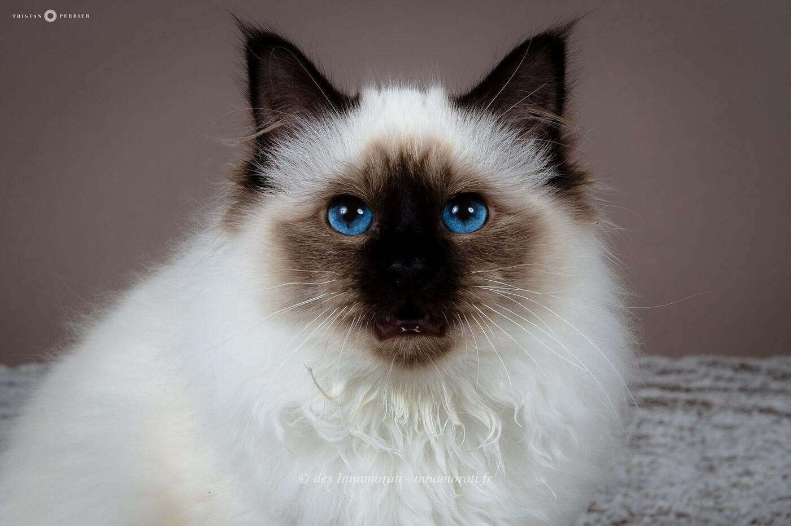


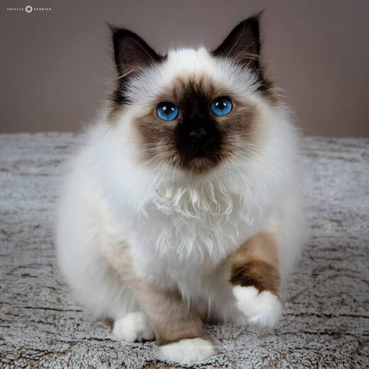

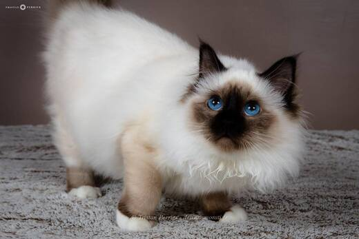

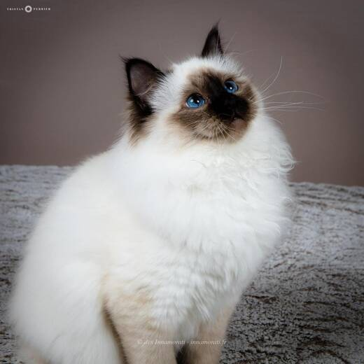

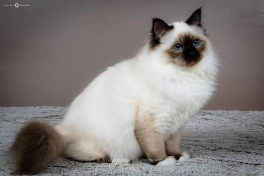

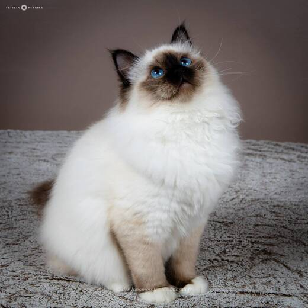

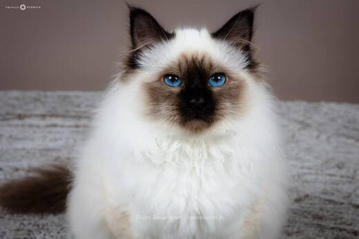

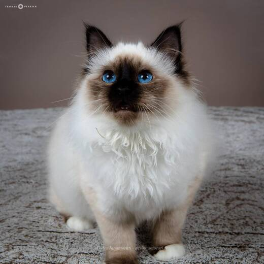

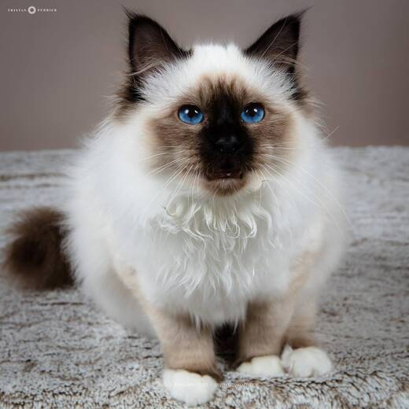

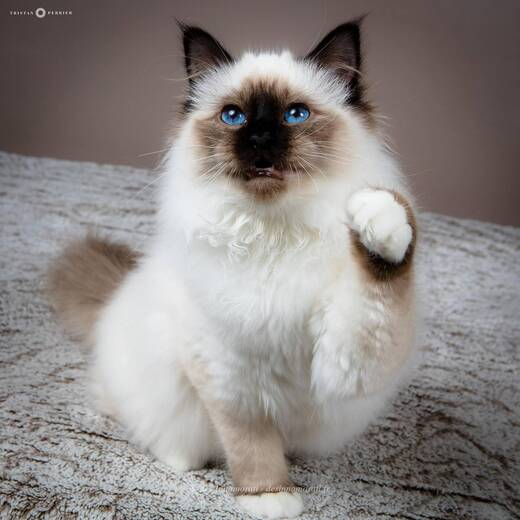

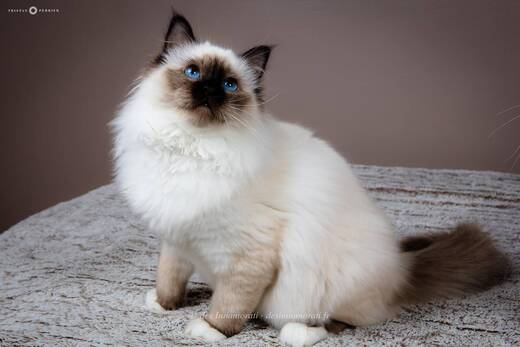

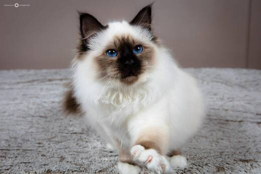

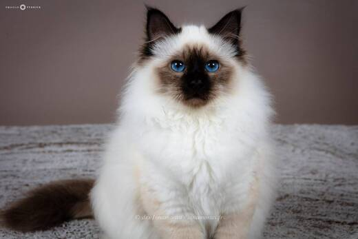

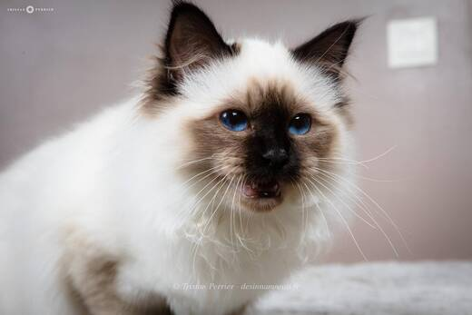

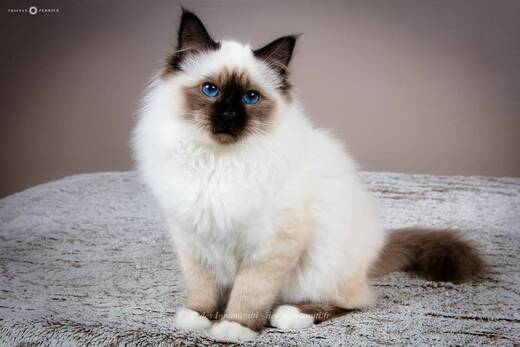

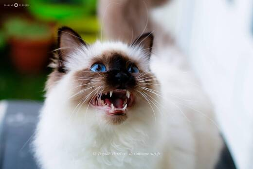

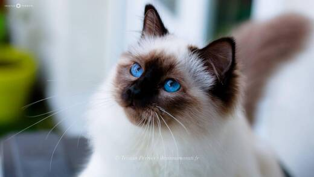

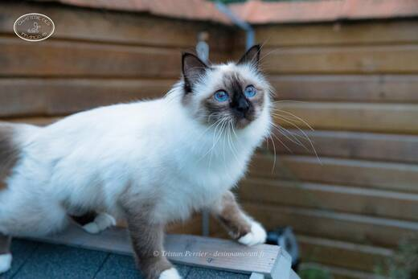

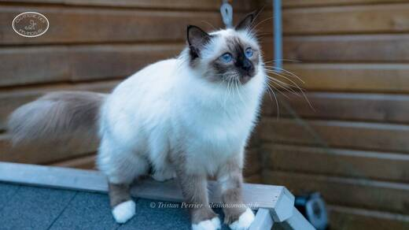

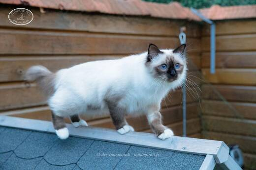

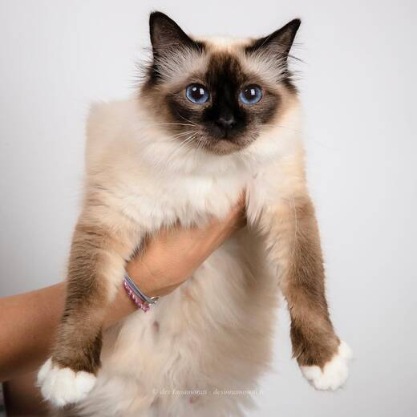

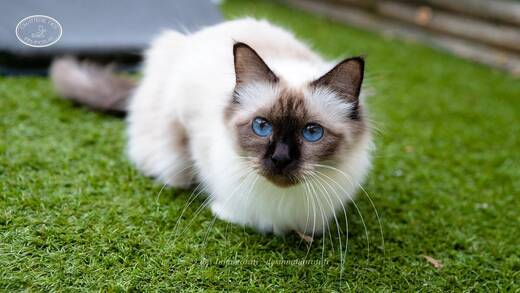

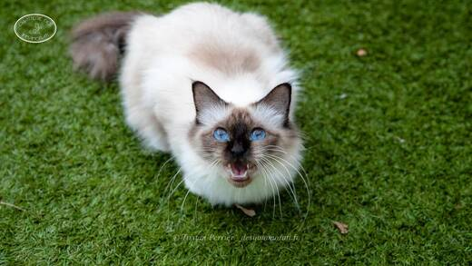

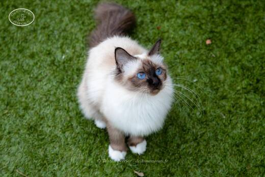

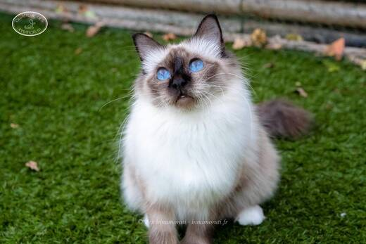

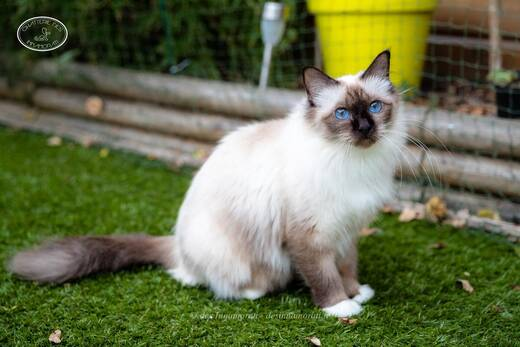

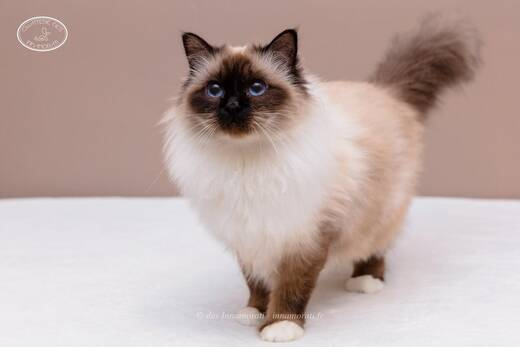

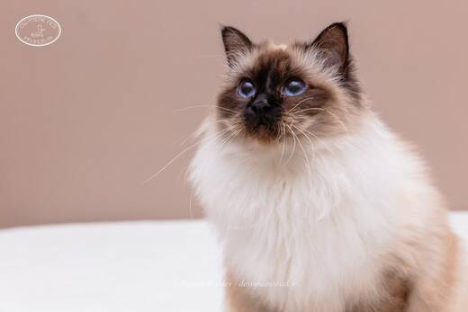

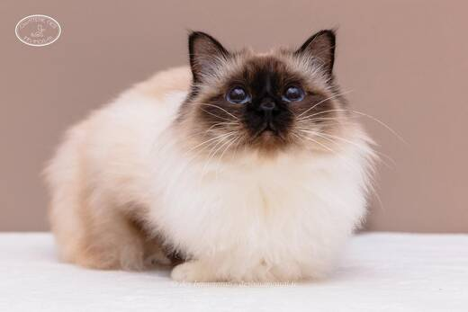

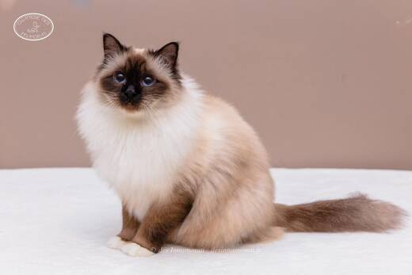

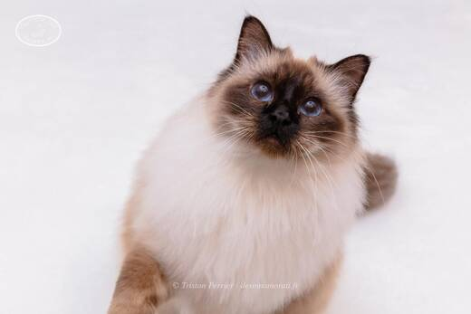

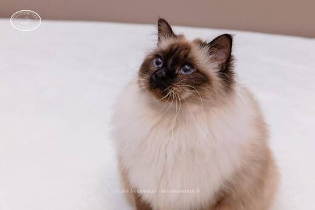

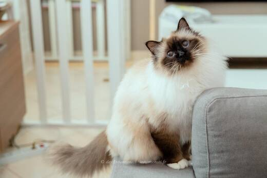

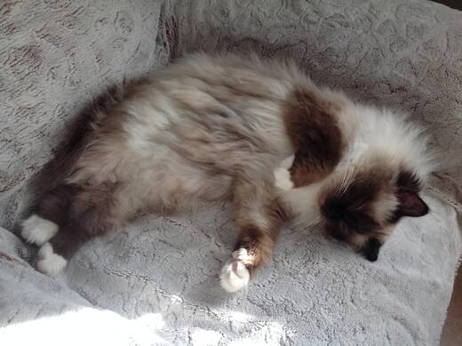

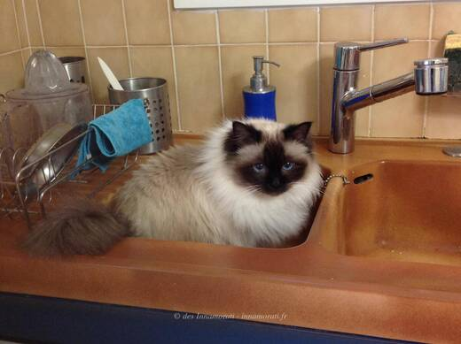

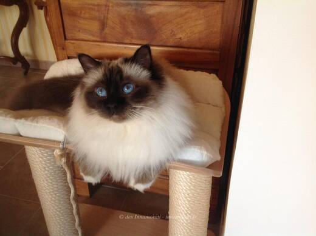

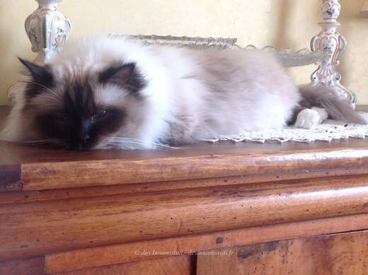

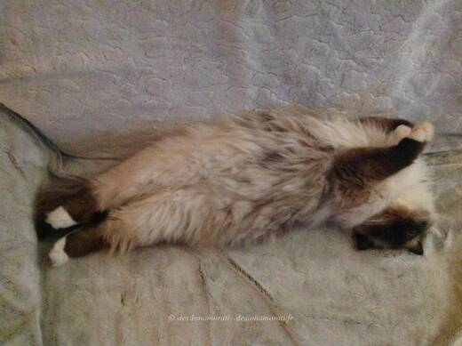
Palmarès
3 expositions · 6 jugements2018
- La Teste de BuchCAC
- La Teste de BuchEXC 4 CAC
2017
- BordeauxEXC2
- BordeauxEXC1
- ParisEXC2
- ParisEXC2
EXC Excellent (classement) · CAC, CACIB, CAGCIB, CACS certificats de champion, champion international, grand champion international et suprême · CAP, CAPIB, CAGPIB, CAPS équivalents pour les chats stérilisés · BIV meilleur de la variété · NOM nommé pour le Best in Show · BIS Best in Show · BOB Best of Best, le meilleur de toute l’exposition
Photos réduites et marquées. Elles appartiennent à la Chatterie des Innamorati et ne peuvent pas être reprises dans une annonce.